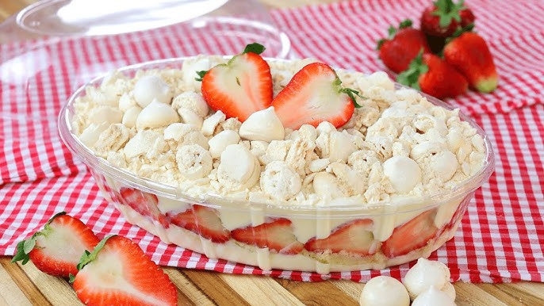

Ingredientes
- 2 caixas de morangos frescos
- 2 xícaras de chantilly pronto ou creme de leite fresco batido
- 1/2 xícara de açúcar (opcional, para adoçar o chantilly)
- Suspiros prontos (quantidade a gosto)
- Calda de morango ou frutas vermelhas (opcional, para decorar)
Modo de Preparo
- Lave bem os morangos, remova as folhas e corte-os em pedaços médios.
- Bata o creme de leite fresco com o açúcar até obter um chantilly firme (se estiver usando chantilly pronto, pule este passo).
- Em taças ou uma travessa grande, faça camadas intercalando chantilly, pedaços de morango e suspiros.
- Repita as camadas até preencher a taça ou travessa.
- Finalize com chantilly, pedaços de morango e decore com calda de morango, se desejar.
- Leve à geladeira por 1 hora antes de servir.